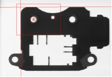
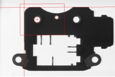
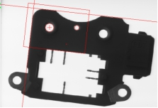
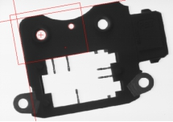

多圆多线定位工具是通过在实时图像上添加多个找线工具和找圆工具，进行一个或多个实时模式与训练模式之间的匹配，再经过结果配置，输出直线和圆的定位结果，定位结果包含了分数、位置和角度等诸多信息。其应用效果如图1所示。
 
 
| 分类 | 参数名称 | 参数描述 |
|---|---|---|
| 属性窗口 | 搜索个数 | 期望搜索的目标个数。 |
| 搜索最低角度 | 搜索角度根据定位目标的旋转范围来确定起始角度、终止角度。角度范围越大，速度越慢；角度范围越小，速度越快。搜索最低角度取值范围[-180,180]。 | |
| 搜索最高角度 | 搜索最高角度取值范围[-180,180]，且搜索最高角度必须大于搜索最低角度。 | |
| 搜索最低缩放 | 搜索缩放下限值 (0,+∞]，小于等于上限值。 | |
| 搜索最高缩放 | 搜索缩放上限值 (0,+∞]，大于等于下限值。 | |
| 接受阈值 | 训练模板与实时搜索结果之间有一个匹配程度的分数，当匹配分数高于接受阈值时表明实时搜索成功。接受阈值的取值范围0~1。 | |
| 对比度阈值 | 对比度为定位结果模式中所有边界点的梯度幅值的中值。通过设置对比度阈值，用户可以删除对比度低于对比度阈值的定位结果。 | |
| 重叠比例阈值 | 重叠阈值为两个定位结果在图像中重叠的百分比，其取值范围为(0,1]，其中0表示二者无重叠，1表示二者完全重合。如果两个定位结果之间的重叠值大于重叠阈值，并且在其他开启的自由度上也是重复的，定位工具会删除其中评价分数较低者，保留具有更佳匹配的结果。 | |
| 混叠阈值 | 匹配分数高于该阈值，则认为肯定是有效模式，换言之，背景模式匹配分数肯定低于该阈值。混淆阈值和实时图像退化、背景图像特性相关。在搜索过程中，搜索到预先设定的有效模式个数，并且最低分数都高于混淆阈值，则停止搜索。否则将进行搜索，直到匹配区域搜索完毕。混淆阈值过低，可能没有搜索到有效模式前即停止了搜索过程；而混淆阈值过高，则可能需要对匹配区域进行全部搜索，即搜索效率相对较低。因此必须合理选择混淆阈值，以平衡效率和可靠性。 | |
| 拟合误差阈值 | 拟合误差反映的是训练模式与实时定位结果之间的差异程度。其理论取值从0到无穷大，分数为0代表训练模式与实时定位结果之间完全相同，一般只能在训练原图中出现。 | |
| 任意极性 | 控制图像边缘灰度级的过渡形式是否选择为任意极性。 | |
| 开启GPU | 控制是否开启GPU，开启GPU，搜索加速，耗时缩短 | |
| 是否开启全图搜索 | 控制是否开启全图搜索。 | |
| 结果排序依据 | 结果排序的依据分为4种，分数、混叠值、拟合误差和加权分数。 | |
| 训练参数 | 显示高级项 | 设置更多选项。 |
| 自动颗粒度 | 控制是否可以手动设置颗粒度。 | |
| 颗粒度 | 描述模式中的边界点的数目。颗粒度越大，速度越快，精度越低；颗粒度越小，速度越慢，精度越高。取值范围1~16。 | |
| 精细颗粒度 | 描述模式中的边界点的数目，取值范围1~16，精细颗粒度必须小于颗粒度。 | |
| 自动噪声 | 控制是否可以手动设置噪声阈值。 | |
| 噪声阈值 | 图像中，像素值低于噪声阈值的部分被认为是噪声，不参与模板训练；像素值高于噪声阈值的部分被认为是图像特征，参与模板训练。取值范围0~255，一般取默认值。 | |
| 自动边缘强度 | 控制是否可以手动设置边缘强度阈值。 | |
| 边缘强度阈值 | 模式中所有边界点的幅值的总和。取值范围[1, +∞)的整数，一般取默认值。 | |
| 找圆工具参数 | 启用找圆功能 | 控制是否开启找圆功能。 |
| 找圆工具个数 | 训练区域内找圆工具的个数。 | |
| 找圆工具序号 | 找圆工具的序号。 | |
| 极性模式 | 卡尺工具的边缘模式有2种，单极性和双极性。 | |
| 边缘极性0 | 边缘极性是指图像边缘灰度级的过渡形式，分为3种，亮到暗、暗到亮和任意。 | |
| 边缘极性1 | 找圆工具的极性模式选择双边缘时设置该参数。 | |
| 对比度阈值 | 卡尺工具默认只采用对比度评价分数，即按照边缘信号的强度来评分，输出边缘最强的点。对比度阈值的取值范围是(0,255]。 | |
| 局外点比例 | 局外点就是偏离曲线较远的点。局外点比例即不参与直线拟合的点的比例，取值范围是[0,1]。 | |
| 边缘选择 | 在查找区域内，卡尺根据不同的边缘属性，确定图像边缘的精确位置。卡尺工具的边缘属性有3种，最佳边缘、第一条边缘和最后一条边缘。最佳边缘是指在查找区域内，图像边缘相邻两侧灰度值相差最大的边缘；第一条边缘是指在查找区域内，沿着卡尺Y轴的正方向，符合边缘极性的第一条图像边缘；最后一条边缘是指在查找区域内，沿着卡尺Y轴的正方向，符合边缘极性的最后一条图像边缘； | |
| 手动设置卡尺 | 选择“是”，支持手动设置卡尺参数，鼠标右键点击卡尺，在弹出的对话框中可以改变卡尺参数；选择“否”，不支持手动设置卡尺参数。 | |
| 启动掩膜 | 掩膜设置是指在模板训练过程中，屏蔽掉不参与模式训练的区域，减少参与模式训练的几何特征。 | |
| 显示探测点 | 选择“是”，显示找圆卡尺的探测点；选择“否”，不显示找圆卡尺的探测点。其中局外点用红色标注，其余用绿色标注。 | |
| 找线工具参数 | 启用找线功能 | 控制是否开启找线功能。 |
| 找线工具个数 | 训练区域内找线工具的个数。 | |
| 找线工具序号 | 找线工具的序号。 | |
| 极性模式 | 卡尺工具的边缘模式有2种，单极性和双极性。 | |
| 边缘极性 | 边缘极性是指图像边缘灰度级的过渡形式，分为3种，亮到暗、暗到亮和任意 | |
| 边缘极性1 | 找线工具的极性模式选择双边缘时设置该参数。 | |
| 对比度阈值 | 卡尺工具默认只采用对比度评价分数，即按照边缘信号的强度来评分，输出边缘最强的点。对比度阈值的取值范围是(0,255]。 | |
| 忽略点比例 | 局外点就是偏离曲线较远的点。局外点比例即不参与直线拟合的点的比例，取值范围是[0,0.5]。 | |
| 边缘选择 | 在查找区域内，卡尺根据不同的边缘属性，确定图像边缘的精确位置。卡尺工具的边缘属性有3种，最佳边缘、第一条边缘和最后一条边缘。 | |
| 手动设置卡尺 | 选择“是”，支持手动设置卡尺参数，鼠标右键点击卡尺，在弹出的对话框中可以改变卡尺参数；选择“否”，不支持手动设置卡尺参数。 | |
| 启动掩膜 | 掩膜设置是指在模板训练过程中，屏蔽掉不参与模式训练的区域，减少参与模式训练的几何特征。 | |
| 显示探测点 | 选择“是”，显示找线卡尺的探测点；选择“否”，不显示找线卡尺的探测点。其中局外点用红色标注，其余用绿色标注。 | |
| 找线扩展参数 | 开启平行偏移 | 选择“是”，根据平行偏移量参数对结果直线，进行平移操作。 |
| 开启参考直线 | 以指定参考直线为依据，对仿射矩形的搜索区域进行位置限制。 | |
| 修正类型 | 修正类型分为2种，平行(0)和垂直(1)。 | |
| 平行偏移量 | 输入直线平移的偏移量。 | |
| 参考角度偏差 | 输入直线允许的角度偏差阈值，如果角度偏差超过阈值，以参考直线的角度修正。 | |
| 参考直线距离 | 输入参考直线的距离，左上方为负值，右下方为正值。 | |
| 图像窗口 | 训练区域 | 图像中参与训练的区域，同属性窗口的训练区域参数。 |
| 输入图像 | 显示待检测的图像。 | |
| 查找圆区域 | 图像中参与找圆区域。 | |
| 查找线区域 | 图像中参与找线区域。 | |
| 标记点 | 显示辅助定位点，同属性窗口的标记点参数。 | |
| 数据链 | 输入图像 | 输入图像宽度、高度、像素大小，同图像窗口的输入图像参数。 |
| 分类 | 参数名称 | 参数描述 |
|---|---|---|
| 监视窗口 | 输入图像 | 输出图像宽度、高度、像素大小。 |
| 训练点坐标 | 定位工具在实时图像中搜索训练模式，计算实时图像中结果模式的位置、其相对于训练模式的角度和相对于训练模式的缩放。训练点坐标即输出定位结果点的坐标。 | |
| 结果个数 | 满足预设条件的结果个数。 | |
| 二维线性变换 | 输出目标相对于模板的平移、旋转、缩放变换。 | |
| 圆结果 | 输出圆结果的圆心和半径。 | |
| 圆弧结果 | 输出圆结果的圆心、半径和角度。 | |
| 直线结果 | 直线的所经过点的位置坐标、方向向量和旋转角度。 | |
| 线段结果 | 线段的起始点坐标和终止点坐标。 | |
| 定位结果 | 输出定位结果的位置坐标、旋转角度、分数、对比度阈值、混叠值、拟合误差和加权分数。 | |
| 执行结果 | 工具执行结果。 | |
| 执行时间 | 工具执行时间。 | |
| 图像窗口 | 输入图像 | 显示工具执行结果图像，同监视窗口的输出图像参数。 |
| 圆结果 | 显示图像训练区域内的圆结果，同监视窗口的圆结果参数。 | |
| 圆弧结果 | 显示图像训练区域内的圆弧结果，同监视窗口的圆弧结果参数。 | |
| 直线结果 | 显示图像训练区域内的直线结果，同监视窗口的直线结果参数。 | |
| 线段结果 | 显示图像训练区域内的线段结果，同监视窗口的线段结果参数。 | |
| 搜索坐标 | 显示定位结果的位置。 | |
| 搜索位置 | 显示实时搜索模式时，对应的仿射矩形区域。 | |
| 定位结果 | 显示定位结果的位置。 | |
| 执行结果 | 显示工具执行结果，执行成功显示“OK”，执行失败显示“NG”，同监视窗口的执行结果参数。 | |
| 数据链 | 二维线性变换 | 输出目标相对于模板的平移、旋转、缩放变换，供后序工具使用，同监视窗口的二维线性变换参数。 |
| 圆结果 | 圆查找结果，供后序工具使用，同监视窗口的圆结果参数。 | |
| 圆弧结果 | 圆弧查找结果，供后序工具使用，同监视窗口的圆弧结果参数。 | |
| 直线结果 | 直线查找结果，供后序工具使用，同监视窗口的直线结果参数。 | |
| 线段结果 | 线段查找结果，供后序工具使用，同监视窗口的线段结果参数。 | |
| 定位结果 | 输出定位结果的位置坐标、旋转角度、分数、对比度阈值、混叠值、拟合误差和加权分数，供后序工具使用，同监视窗口的定位结果参数。 | |
| 训练点坐标 | 输出训练点位置坐标，供后序工具使用，同监视窗口的训练点坐标参数。 |
无
无
参见“\Samples\多圆多线定位.gvp”。